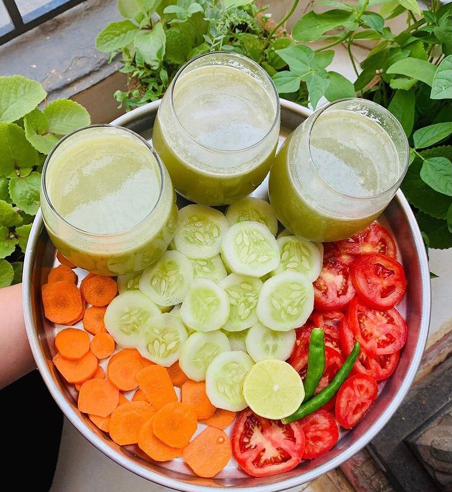

A Healthy Eating Plate For Strong Gut
Most people think that diets are hard, losing weight is hard and getting healthy is hardest-if you are among them please continue reading. At my Healthy Food Habbits (HFH) you will find science-based advice and information about healthy eating that are most accurate. Usually diets are hard or not sustainable because they ask you to do the impossible or eat very little. They will require lot of determination and will power. They isolate you from family and gathering. They cause cravings and binge eating. Now this is the wrong way, it doesnt work. Ultimate way to kick start your day is by having 2 glasses of water empty stomach. Keeping yourself hydrated is a great way to stay away from constipation and cramps. If you think drinking water is boring and tasteless you could try adding ginger,mint,lemon for added flavour.
First one must understand diet is not deprivation. Its not only eating bland food, soups and salads. I dont believe you have to give up rice ,roti puri etC "All food fits".Changes to healthier eating should be practical, enjoyable and sustainable, not restrictive and unsociable.Our recipes section is full of delicious, nutrition packed dishes with affordable ingredients and simple preparation. Our advice section has accurate, well researched health information you can rely on, including some very useful downloadable resources. You dont believe you need to toture yourself .Further,about 260,000 deaths per year in the U.S. are attributable to the lack of physical activity.Click on our team of nutritionists, dietitians, writers, researchers, contributors and editorial board here.And you’ll find answers to our most frequently asked questions here.

Never compromise your health for number of scale. There's only one rule for diet-Calorie Deficit. We must decide which types of food we need to in-take. According to me you can and you must eat normal food and get healthy,fit and lose weight.Therefore, we recommen you to refer my food pyramid blog when we are setting up our meals. Make sure that food that we are taking enough of nutrients contain like vitamin, fiber, carbohydrate, water and others. Even we are in hurry, we must remember that fast food might contain lot of food additives, preservative and more contents of salt and sugar.It seems that everyone has opinion on what's best diet these days. Just because someone eats doesnt make them nutritionist. We also may become sick and not happier than our life before by intaking unhealthy food that affects our mind and body. So, watch out when taking unhealthy food than healthy food. Parents also play an important role for their children, as they guide them. It is important for parents to watch carefully what your children eat for proper growth through their childhood lifestyle. Our ancestors never worried about probiotics. Since fermeneted foods are rich in probiotic bacteria so by consuming them on daily basis is beneficial to produce good bacteria in our body. It also releases enzymes to your overall intenstinal flora, increasing the health of your gut and also enhances your immune system.
Youth should exercise regularly. "According to the National Cancer Institute, regular exercise helps control weight, maintain healthy bones.Continue reading for other factors to keep in mind when grocery shopping for your healthy foods".Saying “zero trans fat”, “all natural”, or “contains whole wheat” tricks people's thinking, where they tend to think that these products are healthy, even when its nutritional value has been stripped away after being processed.
Early start to healthy eating habbits are crucial. Be mindful of decisions you make since eating unhealthy can impact your health.Lets say no to processed food. There is no single formula that fits everyone. If you find this article useful please let me know. it tells me that it mattered to you.